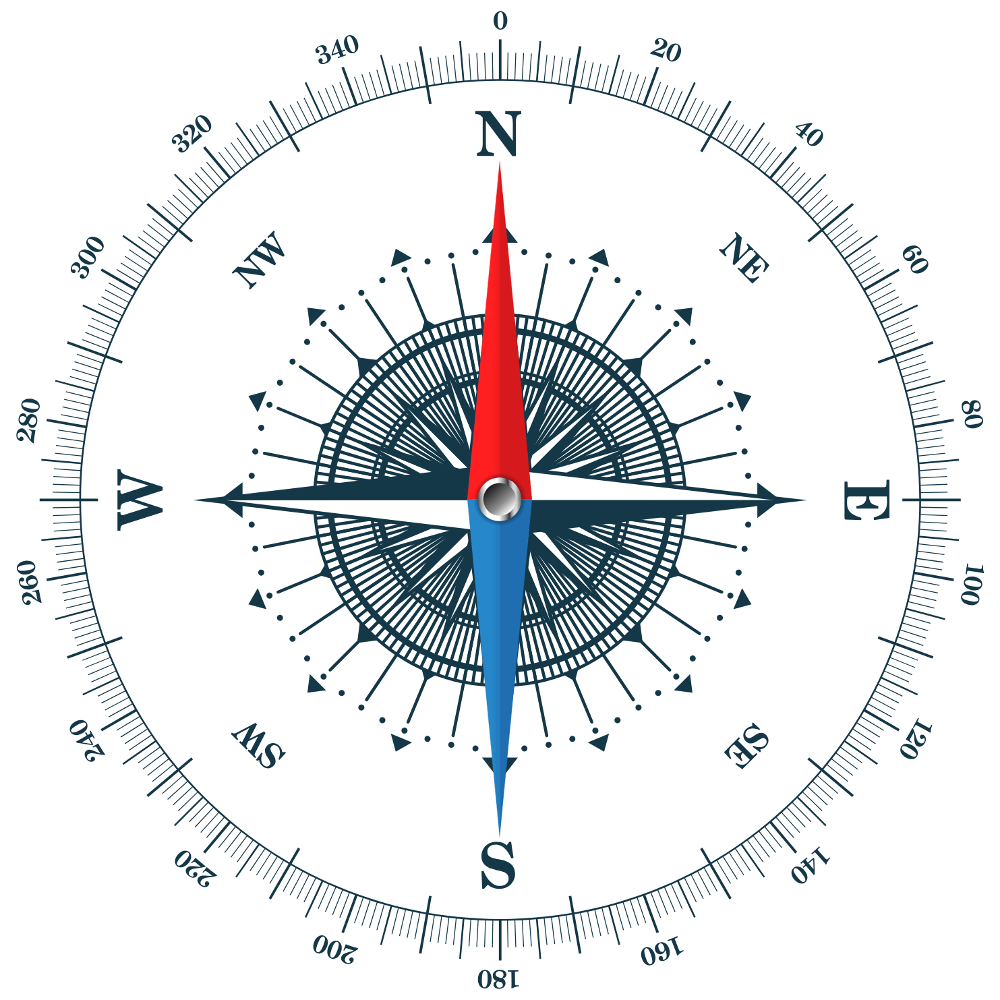

Supervision Météorologique
Se Connecter
Synoptique
Affichage des états en temps réel.
Vitesse du vent :
0
km/h
Température :
0
°C
Direction du vent (texte) :
N
Direction du vent (degrés) :
0
°
Boussole
Direction actuelle du vent :
N

Données en temps réel